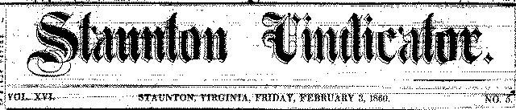
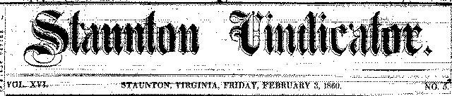

|


About the Valley Newspapers
Examine the typical layout of the Vindicator
Page 1 | Page 2 | Page 3 | Page 4
|
About the Valley NewspapersExamine the typical layout of the Vindicator Page 1 | Page 2 | Page 3 | Page 4 |
|||||||
|
The Staunton Vindicator was founded in 1845 as the Augusta Democrat by publishers Stevenson and Geiger. In 1849, the paper's name was changed to the Republican Vindicator, and in 1858 to the Staunton Vindicator and General Advertiser. The paper was edited and published by Henry B. Michie and James M. Crank from July 1858 through March 1859, when Michie and Co. took exclusive control and shortened the paper's name simply to the Staunton Vindicator. In April 1860, S. M. Yost purchased the Vindicator and published it until June 1861, when the exigencies of the Civil War forced the Vindicator to suspend publication for nearly two years. W. H. H. Lynn edited the paper from 1863 until 1872. In a number of fundamental ways, the Vindicator was identical to its rival paper, the Spectator. Both papers consisted of four pages, each seven columns across. The subscription price for each was $2.50. Finally, not only did both papers have the same advertising rates, but the card in the papers describing their respective rates was worded identically. There were differences, however. The Vindicator published on Fridays rather than Wednesdays, and more significantly, while the Spectator was a Whig paper, the Vindicator was Democratic in politics. This last difference meant that not only were the papers concerned with different local events, but with different national and international news as well. |